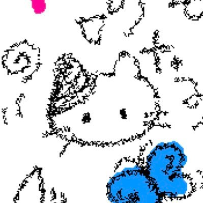

泪
@nekoinekoQwQ
RT @TvTnow_ovo: 我的口头禅：在干嘛呀又在和别人玩吗你现在忙吗陪陪我吧我好无聊呀求求你啦我想你啦对不起呀我好喜欢你呀你人怎么那么好呀你是不是对所有人都这样呀 我怎么有点不信呀 真的假的呀那你多爱爱我好不好呀又在忙吗你好可爱呀你好萌呀你好乖呀你好美呀我好爱呀我手机非…

TvTnow
@TvTnow_ovo
我的口头禅：在干嘛呀又在和别人玩吗你现在忙吗陪陪我吧我好无聊呀求求你啦我想你啦对不起呀我好喜欢你呀你人怎么那么好呀你是不是对所有人都这样呀 我怎么有点不信呀 真的假的呀那你多爱爱我好不好呀又在忙吗你好可爱呀你好萌呀你好乖呀你好美呀我好爱呀我手机非要和你发消息呀你知道吗我最喜欢你了